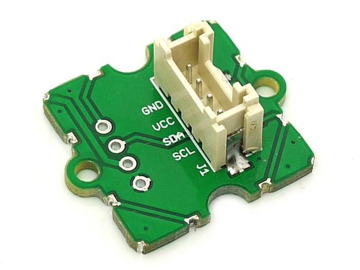
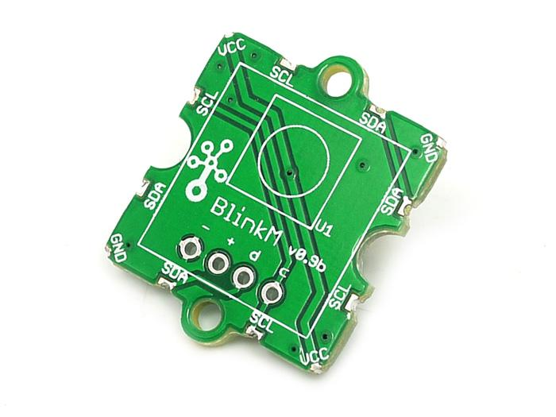
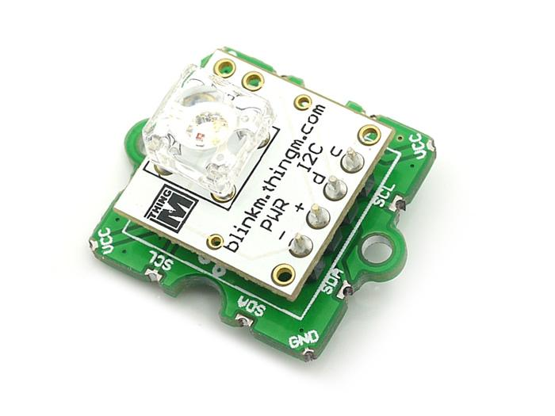
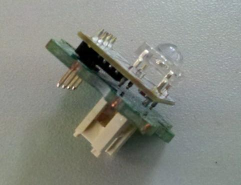
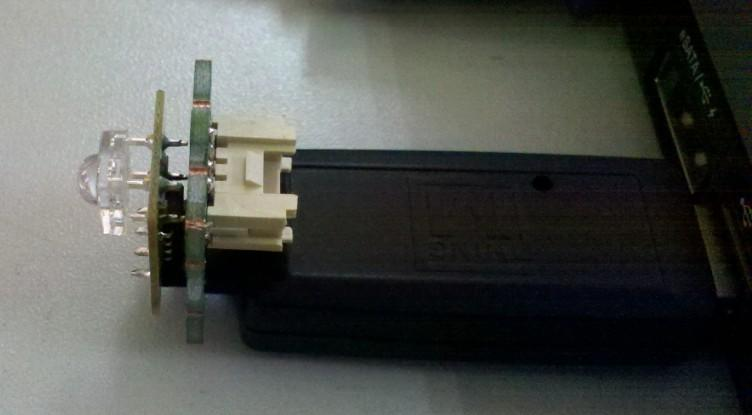
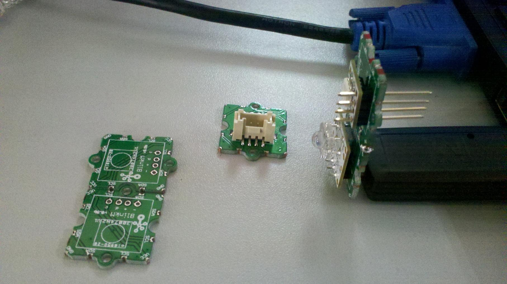

Grove-BlinkM is made for ThingM I2C smart LED. The press-fit header holes in the BlinkM shield make the BlinkM or MinM press-fit onto the Grove , and compatible with our Grove system. It is like an adapter to convert BlinkM/MinM to our grove interface so that it can use our Grove - Base Shield.
BlinkM is a “Smart LED”, a networkable and programmable full-color RGB LED for hobbyists, industrial designers, prototypers, and experimenters. It is designed to allow the easy addition of dynamic indicators, displays, and lighting to existing or new projects. If you’ve used up all your microcontroller PWM channels controlling RGB LEDs and still want more, BlinkM is for you. BlinkM uses a high quality, high power RGB LED and a small AVR microcontroller to allow a user to digitally control a RGB LED over a simple I2C interface. Multiple BlinkMs can be stranded together on an I2C bus allowing for some amazing light displays.
Model: LED42149P
  
| Item | Min | Typical | Max | Unit |
|---|---|---|---|---|
| Voltage | 3.6 | 5.0 | 5.2 | VDC |
| Current | / | / | 60 | mA |
| Communication Protocol | I2C | / | ||


Used with LinkM

Solder the edge mounting.
Note: Grove - BlinkM as a bridge between BlinkM device and arduino/seeeduino. See the datasheet and example Arduino Control Code on BlinkM page for details.
BlinkM_Examples from ThingM.com
If you have questions or other better design ideas, you can go to our forum or wish to discuss.
Copyright (c) 2008-2016 Seeed Development Limited (www.seeedstudio.com / www.seeed.cc)